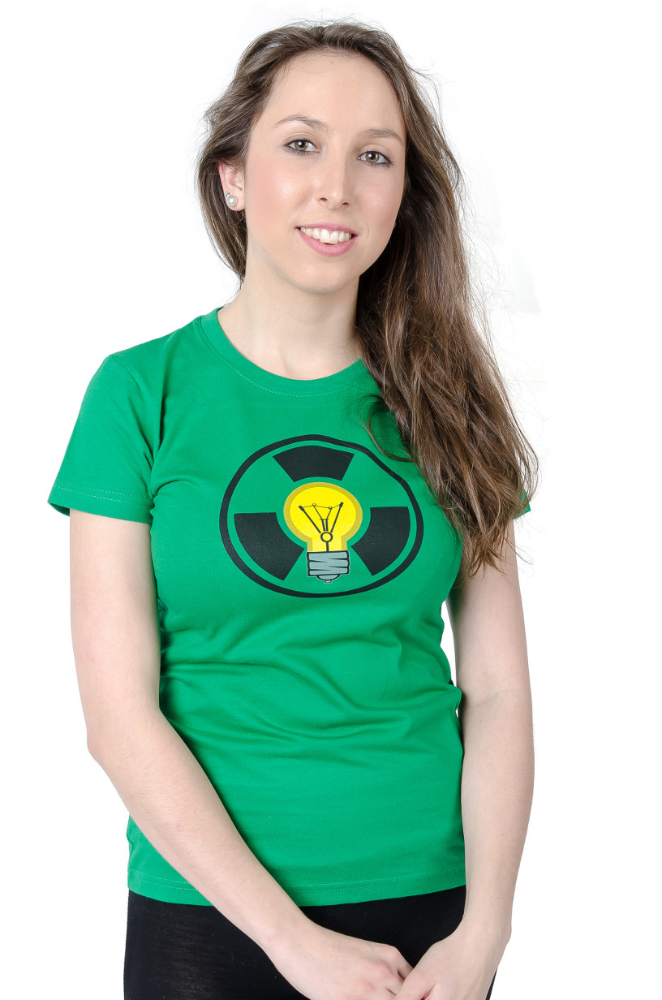

Poločas nápadu představuje Kačku
S Kačkou se neminete, když si chcete užít obyčejný den, hledat obrazce v popraskané omítce, nebo se bavit o cestování.
Profesí je stavař a k improvizaci se dostala před pár lety. Líbí se jí, kolik volnosti se v improvizaci ukrývá, a jak i lidé, kteří se improvizaci věnují se stávají svobodnějšími, opravdovějšími a spokojenějšími. Je jednatelkou společnosti Nandaru s.r.o., která se věnuje vzdělávání improvizačním divadlem.
Na jevišti ztvárňuje celou řadu charakterů - od veselých po smutné, od odvážných po zbabělé. Jednu věc ale miluje úplně nejvíc a to je dobrá zmrzlina :)